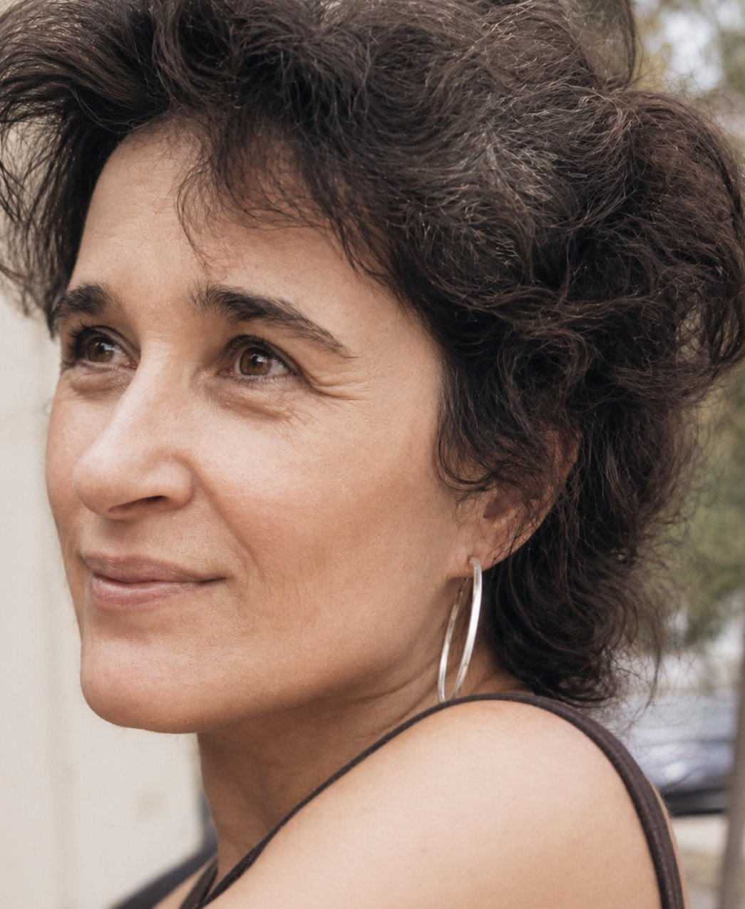

Rabbanit / Hazzan
The Rabbanit offers words of Torah; the Hazzan leads the prayers and orders the service.

Ági Vető is the first Hungarian-born woman to receive Orthodox rabbinic ordination. She is a Talmud scholar, and a member of the Vassar faculty, where she teaches Jewish law and thought, and Hebrew language and literature. She offers words of Torah, leads our study sessions, and sets the intellectual register of the congregation. The questions she asks are the kind you keep thinking about on the walk home.
Marc Michael Epstein is the Mackie M. Paschall and Norman Davis Professor of Religion and Visual Culture at Vassar College, and director of its Jewish Studies Program. A descendant of Hasidim of the lineage of Słonim and Lubavitch, as well as of Romanian socialists — and a later enthusiast and longtime student of the Spanish and Portuguese liturgy and its music — he leads the prayers, teaches the melodies, and orders the service.